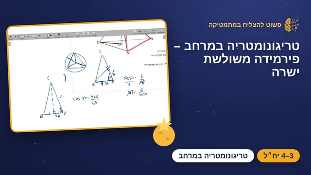
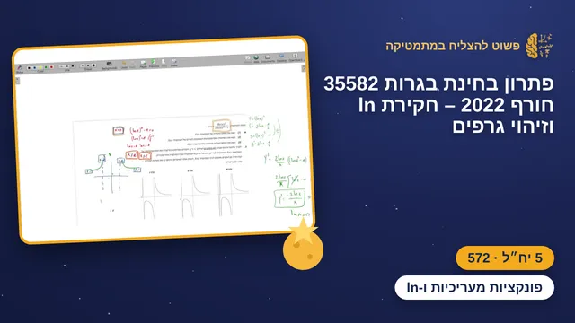
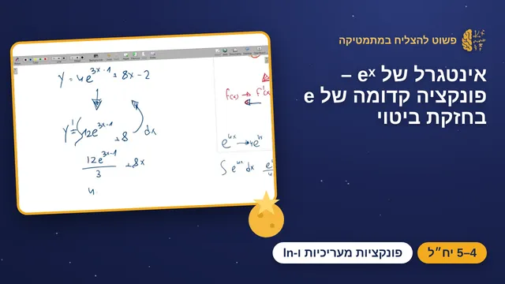
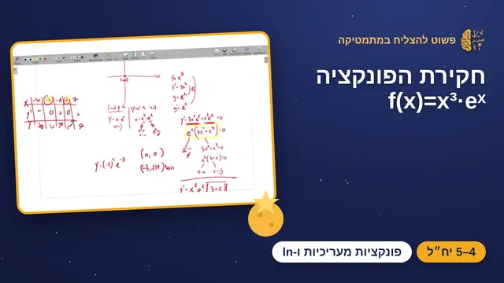
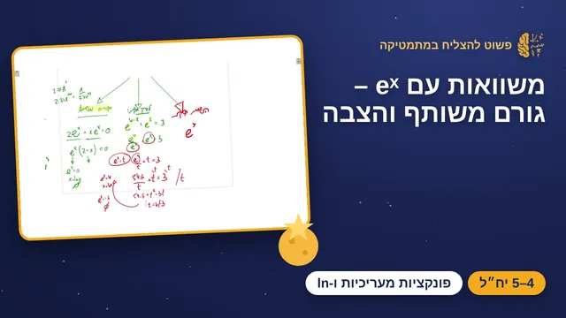
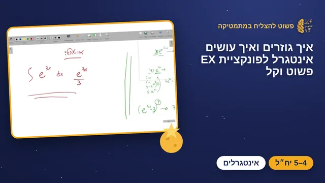
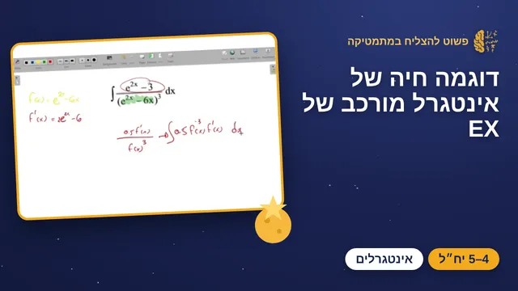
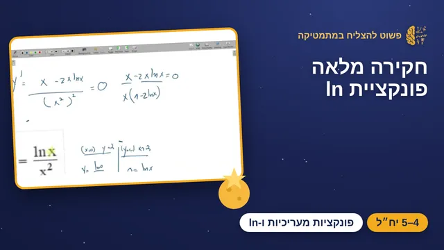

פשוט להצליח במתמטיקה › בחינות בגרות › שאלון 35572 › קיץ מועד ב 2024
בגרות 35572 – קיץ מועד ב 2024
בחינת הבגרות במתמטיקה 35572 (5 יח״ל, שאלון שני, כיתה י״ב) – קיץ מועד ב 2024 תשפ״ד. כאן השאלון המקורי והפתרון הרשמי של משרד החינוך, וסרטוני הסבר על הנושאים שמופיעים בשאלון.
רוצים לעקוב אחרי ההתקדמות?נרשמים בחינם, וכל סרטון שראיתם מסומן ✓. ממשיכים מכל מכשיר.
הצטרפות בחינם ←סרטוני הסבר לפי הנושאים בשאלון 35572
פרק א — אנליטית, וקטורים, טריגו במרחב, מרוכבים
 אנליטית אליפסה עם מעגל ומשיקים שאלת בגרות 572572 שאלת אנליטית גאונית כיתה יב 5 יח
אנליטית אליפסה עם מעגל ומשיקים שאלת בגרות 572572 שאלת אנליטית גאונית כיתה יב 5 יח וקטורים במרחב – תיבה, מכפלה סקלרית וזווית בין וקטורים
וקטורים במרחב – תיבה, מכפלה סקלרית וזווית בין וקטורים וקטורים – פירמידה ריבועית, מכפלה סקלרית ונפח
וקטורים – פירמידה ריבועית, מכפלה סקלרית ונפח וקטורים – הבעת וקטורים במשולש ונקודה על קטע
וקטורים – הבעת וקטורים במשולש ונקודה על קטע 472 וקטורים שאלות בגרות 4
472 וקטורים שאלות בגרות 4 472 וקטורים שאלות בגרות 3
472 וקטורים שאלות בגרות 3 472 וקטורים שאלות בגרות 2
472 וקטורים שאלות בגרות 2 472 וקטורים שאלות בגרות 1וקטורים 472 שאלת בגרות טובה ויפה 4 יח כיתה יבוקטורים במרחב – תיבה, מכפלה סקלרית וזווית בין וקטוריםוקטורים – פירמידה ריבועית, מכפלה סקלרית ונפחוקטורים – הבעת וקטורים במשולש ונקודה על קטע
472 וקטורים שאלות בגרות 1וקטורים 472 שאלת בגרות טובה ויפה 4 יח כיתה יבוקטורים במרחב – תיבה, מכפלה סקלרית וזווית בין וקטוריםוקטורים – פירמידה ריבועית, מכפלה סקלרית ונפחוקטורים – הבעת וקטורים במשולש ונקודה על קטע טריגונומטריה במרחב – פירמידה ריבועית, הסבר בסיסי
טריגונומטריה במרחב – פירמידה ריבועית, הסבר בסיסי
טריגונומטריה במרחב – פירמידה משולשת ישרהפרק ב — גדילה ודעיכה, מעריכיות ולוגריתמיות

פתרון בחינת בגרות 35582 חורף 2022 – חקירת ln וזיהוי גרפים חקירת EX שאלת בגרות נדירה ויפה וחכמה במיוחד
חקירת EX שאלת בגרות נדירה ויפה וחכמה במיוחד חקירת ln עם אינטגרל כולל שאלת בגרות
חקירת ln עם אינטגרל כולל שאלת בגרות ln – פתרון שאלות בגרות
ln – פתרון שאלות בגרות אינטגרל של פונקציה מעריכית – מציאת f ושטח
אינטגרל של פונקציה מעריכית – מציאת f ושטח
אינטגרל של eˣ – פונקציה קדומה של e בחזקת ביטוי פונקציית ln – תחום הגדרה, משוואות וחוקי לוגריתמים
פונקציית ln – תחום הגדרה, משוואות וחוקי לוגריתמים f(x)=eˣ ו-g(x)=e⁻²ˣ⁺³ – נקודת חיתוך, משיק ושטח
f(x)=eˣ ו-g(x)=e⁻²ˣ⁺³ – נקודת חיתוך, משיק ושטח
חקירת הפונקציה f(x)=x³·eˣ
משוואות עם eˣ – גורם משותף והצבה משוואות עם eˣ – הצבה t=eˣ ומשוואה ריבועית
משוואות עם eˣ – הצבה t=eˣ ומשוואה ריבועית מציאת פונקציה מהנגזרת f′x=3−e⁻ˣ⁺² ומשיק
מציאת פונקציה מהנגזרת f′x=3−e⁻ˣ⁺² ומשיק חקירת fx=ax∕ln x−a עם פרמטר + g=1∕f
חקירת fx=ax∕ln x−a עם פרמטר + g=1∕f חקירת fx=x+lnx²−8 – תחום, אסימפטוטות וקיצון
חקירת fx=x+lnx²−8 – תחום, אסימפטוטות וקיצון המספר e ולוגריתם – לפתור משוואה מעריכית
המספר e ולוגריתם – לפתור משוואה מעריכית אינטגרל שנותן ln – ∫1∕ax+bdx
אינטגרל שנותן ln – ∫1∕ax+bdx גזירת eˣ – פונקציה מורכבת ומכפלה
גזירת eˣ – פונקציה מורכבת ומכפלה חקירה של EX 4 5 תרגיל מתוק מאוד
חקירה של EX 4 5 תרגיל מתוק מאוד עוד קצת טוב עם EX משחקי חזקות
עוד קצת טוב עם EX משחקי חזקות
איך גוזרים ואיך עושים אינטגרל לפונקציית EX פשוט וקל
דוגמה חיה של אינטגרל מורכב של EX הסבר על פונקציית ln – איך גוזרים, איך פותרים משוואה והמשמעות שלה כיתה יב
הסבר על פונקציית ln – איך גוזרים, איך פותרים משוואה והמשמעות שלה כיתה יב איך פותרים משוואת EX 4 5 יח כיתה יב
איך פותרים משוואת EX 4 5 יח כיתה יב פונקציית ln שאלה טילית כולל נגזרת מורכבת
פונקציית ln שאלה טילית כולל נגזרת מורכבת
חקירה מלאה פונקציית lnפתירת משוואה ב-ln איך גוזרים ln פשוט וקל
איך גוזרים ln פשוט וקל פונקציית EX שאלות עם אינטגרלים 1
פונקציית EX שאלות עם אינטגרלים 1 פונקציית ln – תחום הגדרה פשוט וקל
פונקציית ln – תחום הגדרה פשוט וקל פונקציית EX שאלות עם אינטגרלים 2
פונקציית EX שאלות עם אינטגרלים 2 חקירת EX איכותית כולל הסבר המהותהסבר EX – כל החומר
חקירת EX איכותית כולל הסבר המהותהסבר EX – כל החומר